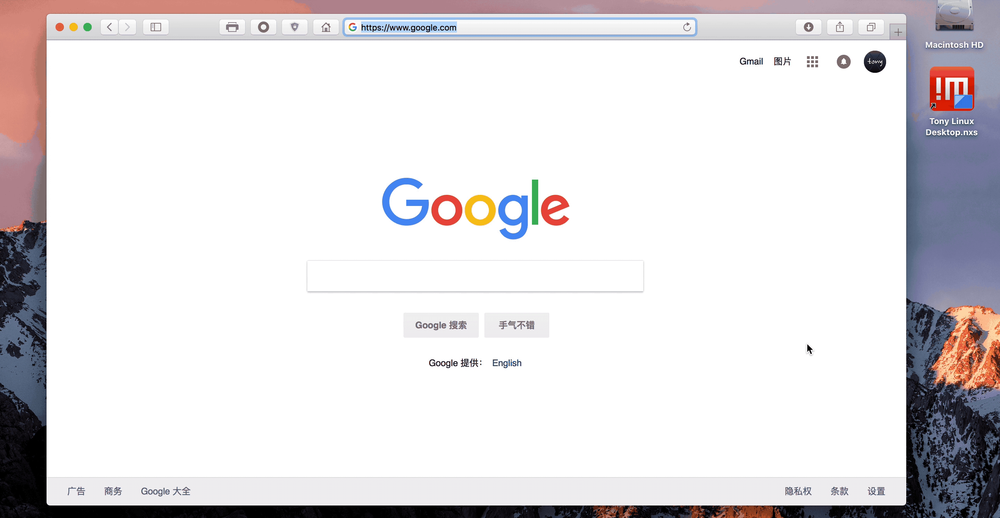
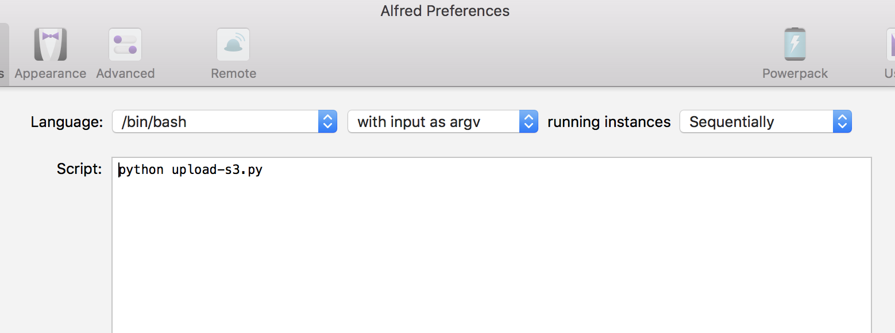
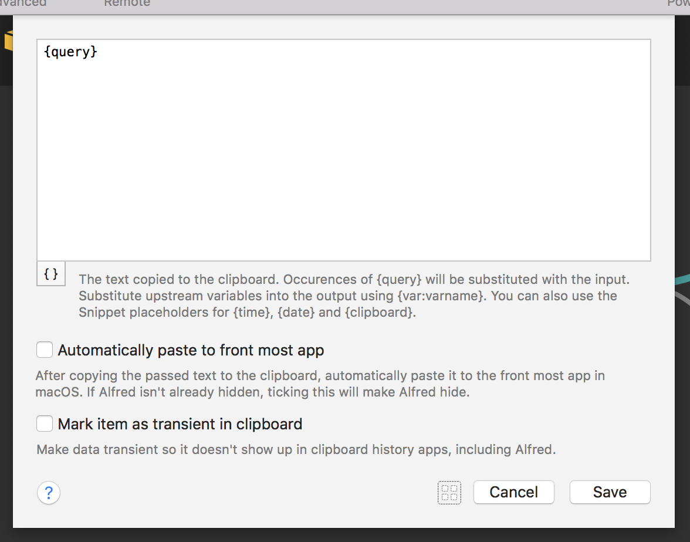

As Markdown markup language gets more and more popular, most people have a need to quickly generate a public url for screenshot/image in clipboard. Today I created an Alfred workflow that helps you upload images/screenshot in clipboard.
Demo

Overview
- Use
pngpasteto get image data from clipboard - Write to a image file in
/tmpfolder - Use
boto3to upload image file to AWS S3
Implementation
Now we have the idea to achieve the goal, let’s do it in Alfred workflow and python script.
Create Alfred workflow
Create Blank Workflow and give it a name
Right click in background and select Inputs -> Keyword

Give it a keyword which you will be typing to trigger the workflow

Right click in background and select Actions -> Run Script
Let’s make it use Python to run a script

Click on the icon on the left of Cancel button to open workflow folder
Create a script file (Make sure the file name is the same as the Run Script action uses) and edit like below
#!/usr/bin/python
# -*- coding: utf-8 -*-
from __future__ import print_function
import datetime
import os
import sys
import atexit
import imghdr
from subprocess import call
from os.path import expanduser, exists, basename, getsize
from workflow import Workflow
def capture():
file_name = datetime.datetime.now().strftime('%Y_%m_%d_%H_%M_%S.png')
file_path = os.path.join('/tmp', file_name)
atexit.register(lambda x: os.remove(x) if os.path.exists(x) else None, file_path)
save = call(['./pngpaste', file_path])
if save == 1:
# Quit job if no image found in clipboard
print "No image found in clipboard"
sys.exit()
return file_path, file_name
def main(wf):
import boto3
file_path, file_name = capture()
bucket_name = os.getenv('bucket_name')
s3 = boto3.client(
's3',
aws_access_key_id=os.getenv('access_key'),
aws_secret_access_key=os.getenv('secret_key')
)
s3.upload_file(file_path, bucket_name, file_name, ExtraArgs={'ContentType': "image/png"})
output = "%s/%s" %(os.getenv('bucket_uri'), file_name)
print (output,end='')
if __name__ == '__main__':
wf = Workflow(libraries=['./lib'])
sys.exit(wf.run(main))This script will return the image public url and let’s copy it to clipboard and push a notification.
Right click on the background and select Outputs –> Copy to Clipboard

Right click on the background and select Outputs –> Post Notification

Now let’s connect those boxes like below:

Include libraries
In the scripts, we used below libraries and need to be included in the workflow to make sure they can be run without issue
Install above libraries like below:
pip install --target=/path/to/workflow Alfred-Workflow
pip install --target=/path/to/workflow/lib awscli
pip install --target=/path/to/workflow/lib boto3
brew install pngpastePlease note that pngpaste is a command line tool and you should copy the binary file to /path/to/workflow.
Add environment variables
In the script, we used below variables that we want to make it configurable instead of hard coded:
access_key: S3 access key
secret_key: S3 access secret
bucket_name: S3 bucket name. e.g.
my-bucket-namebucket_uri: S3 bucket URI without trailing slash. e.g.
https://s3-us-west-1.amazonaws.com/my-bucket-name
Add and config above environment variables into workflow environment variables settings like below

Follow instructions here to create access key and secret if you don’t have it already
Make sure the user can read/write to S3 bucket.
Complete
Congratulations You made it! Give it a try!
Follow-up
Now you may think of adding support for the workflow to be able to upload any image from local. As you are getting familiar with Alfred workflow development, feel free to give it a try!
Download in Github:
tonyxu-io/Alfred-Workflow-Upload-S3
References: